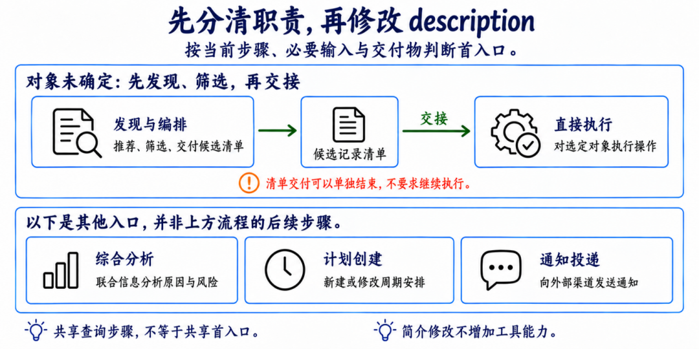
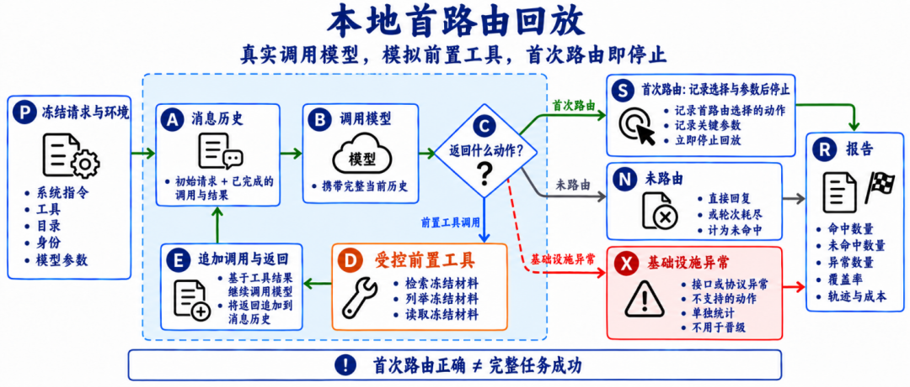
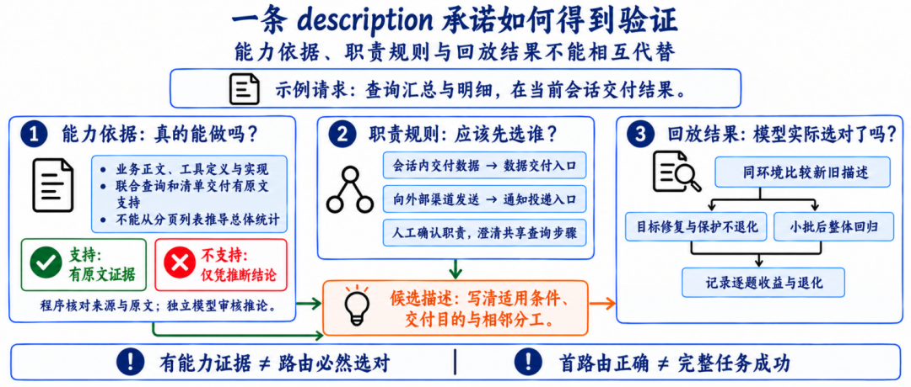
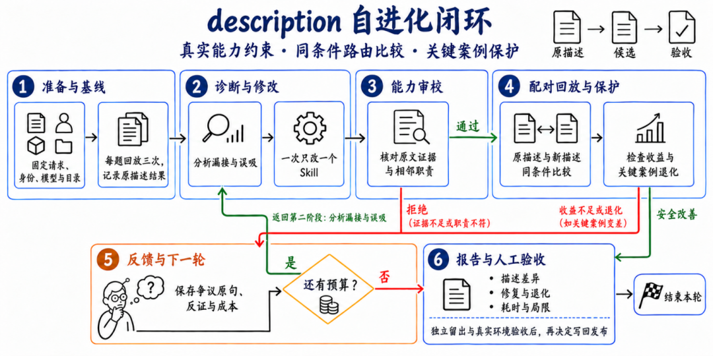
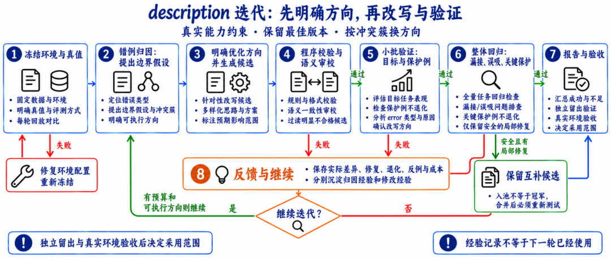
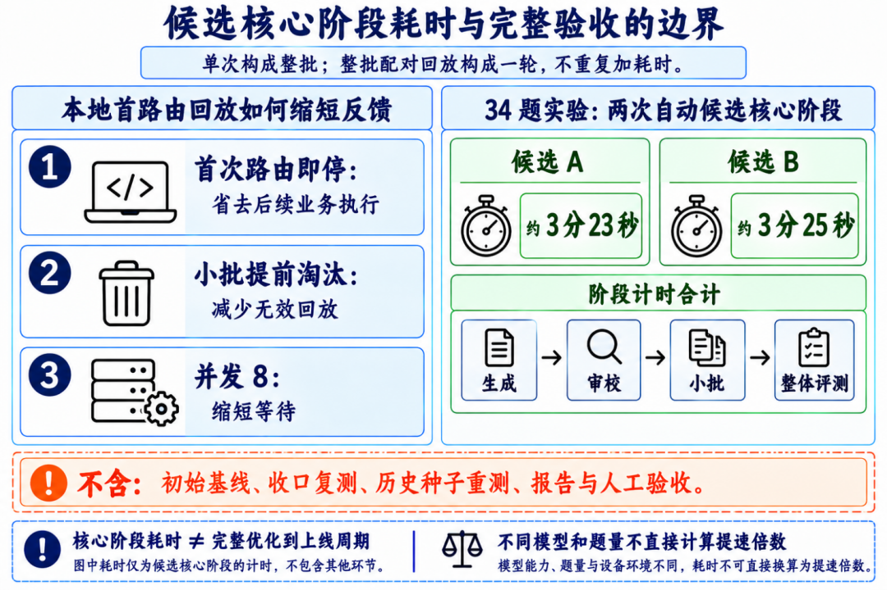

Skill 路由优化实战：基于真实业务请求的 description 自进化
来源：微信公众号 归档日期：2026-11-05 抓取状态：成功 原文字符：8239｜配图：8 张
摘要速览
- 群同步待补摘要 · 微信公众号
核心内容
（待补充）
可执行启发
（待补充）
我的想法
（待补充）
原文沉淀
目录
阿里妹导读
文章内容基于作者个人技术实践与独立思考，旨在分享经验，仅代表个人观点。
Agent选错Skill时，我们最初会把错误请求交给模型，直接修改description，再重跑整批任务。这样能得到新版本，却很难回答：为什么改这里，修改是否针对真正的冲突，下一轮又能从这次尝试中学到什么？完整业务执行还会把查询、操作和通知的耗时一起带进优化，让一句简介的修改也需要长时间等待。
这次实践把问题拆成两部分：用本地首路由回放缩短反馈周期；用“归因与优化方向→description改写→回归验证→经验沉淀”组织迭代。最终选定候选在34条开发请求上命中31条，准确率为91.18%。这是开发集选优结果，尚不能代表未见请求或线上完整任务的成功率。
贯穿本文的案例是两种相邻能力的混淆：它们都能查询数据，但一个在会话中交付结果，另一个向外部渠道投递通知。把共同步骤背后的交付目的写清楚，比继续补充查询关键词更能解释这次修改的方向。
文中案例已转换为通用任务场景，Skill名称和description示例均为概括改写；实验数字沿用原实验统计，不表示在这些示例上重新进行过实验。
首路由评测只观察选择之前的过程
首路由指Agent第一次把请求交给哪个Skill或子Agent。它决定接下来由谁承接任务，但不代表后续执行已经成功。
例如，“先找出符合条件的记录，再批量处理”和“处理这些已经明确的记录”可能调用相似工具，却需要不同入口。前者缺少发现和筛选步骤，后者可以直接操作；“以后每天执行”还要区分新建计划与在已有计划中执行。
| 当前任务状态或交付目的 | 通用首入口 | 需要保护的边界 |
|---|---|---|
| 对象未确定，需要先发现、筛选，再交接 | 发现与编排 | 不能承诺自己完成由其他能力执行的操作 |
| 对象已明确，直接操作 | 直接执行 | 不应接管尚缺必要筛选的请求 |
| 新建或修改周期安排 | 计划创建 | 在已有计划中执行不等于新建计划 |
| 联合信息进行趋势、风险或原因分析 | 综合分析 | 与单项数据查询区分 |
| 向外部渠道发送通知 | 通知投递 | 内部查询步骤不自动构成独立查询入口 |

图1职责与首入口分工。按当前步骤、必要输入和交付目的区分入口；并列能力不代表后续步骤。
本地回放保留“消息历史→模型→前置工具→追加调用与返回→模型”的循环。模型仍被真实调用，受支持的检索、目录列举和简介读取由冻结材料提供；观察到首次Skill或子Agent调用就停止，省去后续业务执行。这比单次分类更接近实际选择过程，但工具返回仍是受控模拟。比较新旧简介时，需要冻结题目、人工预期、身份、模型参数、系统指令、工具及能力目录，只修改授权范围内的description。

图2本地首路由回放循环。轮次耗尽计为未命中，基础设施异常单列；首路由正确不等于完整任务成功。
首次路由错误、参数非法、直接回复而没有路由，以及达到轮次上限，都按既定协议计为未命中。接口异常、不支持的前置工具动作等基础设施问题单列，受影响的配对结果不能用于候选晋级。准确率之外还要报告异常数和覆盖率。如果模型使用了模拟器尚不支持的合理检索写法，应先修复模拟器、完成预检，再重新冻结环境和建立基线。不能为了绕开模拟缺口而修改description，压制正常检索；环境改变后也不能拼接旧成绩。
先提出归因假设和优化方向
从可观察错误开始
一类请求希望查询某对象的汇总数据与记录明细，在当前会话中交付两张表。实际首路由却选择了通知投递能力。可以确认的现象是：预期承接方与实际选择不一致，而且用户没有要求向外部渠道发送通知。至于模型为什么选错，只能先提出假设。下面将已有诊断整理为可检验的假设，右列是进一步区分它们的验证设计。
| 归因假设 | 当前可检查的证据 | 区分假设的验证方式 |
|---|---|---|
| 通知描述把内部查询步骤写成了宽泛适用范围 | 简介同时列出查询汇总、读取明细与发送通知，没有清楚限定交付目的 | 只收窄通知描述，检查会话查询是否恢复、真实通知是否仍正确 |
| 数据交付能力没有表达组合查询场景 | 简介未清楚说明汇总与明细可以联合交付 | 只补充该场景，检查相关查询及相邻分析任务 |
| 两侧缺少交付目的的分工 | 简介都强调数据步骤，未清楚区分会话展示与外部投递 | 分别修改与联合修改，比较相邻边界 |
这些证据能够支持假设，却不能读取模型内部的真实决策原因。错例分簇也只是帮助发现共同冲突，不能证明某个根因已经成立。
归因与修改方向分开记录
同一个边界问题可以有多种修法：补充正向适用条件、增加排除条件，或者明确复合请求的承接规则。简单提高某个Skill的优先级，也许能修复目标错例，却可能把更多相邻请求错误吸进来。因此，生成description前，需要先写清本轮方向。例如：
围绕最终交付目的区分入口。会话内交付汇总与明细的请求，由具备该能力的查询入口承接；向外部渠道发送通知的请求，由通知入口承接。保留两者已有能力，不因共享查询步骤而相互接管。
这个中间产物让审校和后续评测有了明确对象：本轮是在澄清交付边界，还是提高优先级？实际编辑是否改变了同一个分界？
ProTeGi通过错误样本生成自然语言批评，再据此编辑提示词，并结合BeamSearch与Bandit策略搜索候选。本文借鉴“先形成反馈，再指导修改”的方法；这里的自然语言梯度是待验证的语义反馈，不是数学导数，也不保证归因正确[1]。
将方向落实为description的具体修改
description是模型选择能力时看到的职责简介。它需要表达适用条件、必要输入、交付物和相邻分工。简介修改只能澄清已有能力，不能增加工具能力或扩大权限。
下面用概括后的文本展示这次修改涉及的边界，示例并非实际候选的逐字复现。
| 对象 | 修改前的表达问题 | 修改后的表达重点 |
|---|---|---|
| 数据交付入口 | 未清楚说明汇总与明细的组合交付 | 支持联合查询，并在会话中交付汇总表与记录清单；用户无需先提出后续操作 |
| 通知入口 | 查询、生成内容、发送通知并列，容易混淆步骤与适用范围 | 先限定通知投递目的，再说明查询只是内部步骤，排除单纯会话查询 |
数据交付入口可概括为：
支持针对指定对象联合查询汇总数据与记录明细，在当前会话中交付统计表和记录清单，并在需要时衔接后续处理。仅请求数据交付、尚未要求继续操作时，也属于本能力范围。
通知入口可概括为：
当请求的交付目的是向外部渠道发送通知时使用。流程内部可以查询条件、汇总和明细，但这些步骤不构成独立查询入口。仅要求查询、筛选或在当前会话中展示数据时，不使用本能力。
这里改变的是模型理解分工的方式：将会话数据交付写成正向职责，将通知投递写成适用条件，并解释内部查询与外部服务范围的区别。具体涉及计划创建时，还必须遵守已确认的入口约定，不能从“支持通知”直接推导“负责所有调度”。每句承诺都要有相应依据。业务正文、工具定义和实现回答“能否做到”；人工确认的职责规则回答“应该由谁先承接”；回放轨迹回答“模型实际上选了谁”。三类证据不能相互代替。

图3三类证据的关系：能力依据约束承诺，职责规则约束预期首入口，回放结果验证实际选择。
能力证据摘录不全时，应补原文；承诺超出实现时，应收窄。返回分页列表不等于支持总体统计，输出某字段也不等于支持任意组合筛选。反过来，排除项也不能否定真实存在的独立查询或清单交付能力。
ToolRewrite将工具描述视为影响工具使用的重要接口，并提出Trace-Free+，通过课程学习把轨迹丰富场景中的监督迁移到无需轨迹的描述重写。我们借鉴其接口描述优化与可迁移规律的思路；后文的经验记录与检索属于工程扩展，并未复现其训练方法[2]。
用回归结果检验修改

图4旧流程示意（保留原图）：候选通过能力审校后，直接进行整批配对回放。图中单Skill修改粒度属于旧流程，不是当前候选只能修改一份简介的限制。

图5迭代流程。归因与方向、实际改写、审校及回归保持一致；安全互补候选可以保留，入池不等于冠军。
候选生成后，先做机械校验，再做语义审校，最后进入回放。
机械校验由程序负责：恢复证据引用、应用替换、生成完整描述、核对实际差异和长度。模型负责判断能力承诺、适用范围及消歧作用。当前生成与审校使用同一模型的独立调用，职责分开不等于消除了同源偏差。
曾有一次候选在诊断中讨论A与B的竞争，实际修改主要澄清计划创建，审校又按通知入口检查。每句话都可能合理，却没有改中同一个问题。因此，诊断、实际差异和审校必须围绕同一组竞争入口。
先测目标与保护例
小批验证同时包含需要修复的错例和原本正确的保护例。对于查询与通知的冲突，至少要覆盖：会话查询、真实通知，以及使用相似词语但交付目的不同的请求。至少修复目标且保护不退化，候选才值得进入整体回归。
整体回归继续检查误吸、漏接和关键边界。高分不能抵消重要保护失败。复用观测也必须满足同候选、同环境、同请求及对应重复轮次；改过一句话，旧成绩就不能作为新候选成绩。
保留互补候选后仍需实际测试
总分较低的安全候选可能修复另一组错例，值得留在研究池。GEPA利用轨迹反思、逐实例表现与互补候选搜索，为这种保留方式提供了方法参考。但两个版本正确请求的并集只是搜索线索，合并后的description必须重新回放[3]。
当前结果支持什么
最终选定候选在34条开发请求上命中31条。每题回放3次，按多数首路由计分；三次选择各不相同时计为未命中，不挑正确的一次计分。当前没有独立留出集，已用于诊断和选优的历史题只能继续作为开发与回归数据。
选定版本中，两道真实通知保护题均被正确承接，查询与通知的分界有所改善。但这次同时修改了两份简介，尚不能分离两侧描述及各句编辑的独立贡献。单侧与联合修改的对照，是进一步验证归因的方向，而非本次已经完成的实验。
剩余三题分别涉及综合分析与单项查询、组合编排与前置查询、计划创建与业务执行的冲突。轨迹能够定位选择分歧，下一步仍需针对这些分歧提出新假设。
将验证过程转化为下一轮可用的经验
保存候选历史，只能保证可追溯。要让下一轮少走弯路，还需要把反馈变成可检索、可限定范围的经验。
归因经验与修改经验应分别保留。前者描述什么错误模式可能对应什么原因，后者描述什么修法在什么条件下有效。一次候选失败，不能直接推翻所有归因；也可能是方向过宽、具体改写偏离方向，或模型波动造成。
| 经验内容 | 在查询与通知案例中的记录方式 |
|---|---|
| 错误模式 | 会话数据交付被选到通知入口 |
| 因假设与证据 | 描述共享查询步骤，交付目的区分不足；引用对应语句 |
| 优化方向 | 明确会话交付与外部投递，不改工具能力 |
| 实际编辑 | 记录两侧修改及最终差异，不能只保存修改意图 |
| 验证结果 | 逐题修复、退化、保护表现、重复回放和环境版本 |
| 适用范围与反例 | 适用于交付目的混淆；不能推广为所有查询都优先某入口 |
失败反馈也要足够具体。格式错误需要指出字段和允许值，能力误拒需要原句与证据，回放无收益需要逐题差异和反例。“上次被拒绝”无法帮助下一轮调整。
原实践曾出现新冻结版本未向首次生成传递旧反馈的情况，说明记录与消费之间仍有缺口。下一步应核对：检索到了哪些经验，哪些进入了归因与方向生成，哪些因环境变化不再适用。旧经验可以成为线索，旧分数不能迁移。
一个值得形成的迭代流程是：
当前错例与冻结环境→提出归因假设→检索适用经验并复核→明确优化方向→生成并审校description→小批与整体回归→记录成功、失败及适用范围。
经验复用仍需在当前请求上验证。新记录进入时，应合并重复、区分冲突条件，并保留被反例否定的方向。否则经验库也可能变成另一份错题补丁集。
控制描述增长和反馈成本
优先替换和合并
每遇到一题就新增一句例外，description会越来越长，适用条件反而越来越窄。TextReg将提示词容量成本与规则适用范围收窄联系起来，提出正则化的文本空间优化方法。它提醒我们关注增长背后的过拟合，但其推理任务结果不能直接作为本项目的路由收益[4]。
当前实现设置了600字符上限，并要求先替换错误边界、合并重复和删除冗余，再考虑新增。硬限制只能防止无限增长，不能证明规则已经泛化。
进一步可尝试：逐题覆盖、准确率及退化表现相同时，优先短版；从有效父版本生成压缩候选，重新完整回归。不能沿用压缩前成绩，也不能删除权限、真实能力或交接约束来腾位置。这些属于后续策略，不是已有的候选选择能力。
分清候选阶段与完整验收
本地首路由即停减少后续执行，小批淘汰减少无效回放，并发缩短等待。这三者影响的成本不同。
在34题实验中，两次自动候选的生成、审校、小批和整体评测阶段合计约为3分23秒与3分25秒；回放并发为8。计时不含初始基线、收口复测、历史种子重测、报告和人工验收，不能写成完整优化三分钟完成。

图6当前34题实验的候选核心阶段计时。仅含生成、审校、小批与整体评测，不含完整验收；不与历史不同模型和题量换算提速倍数。
早期不同题量、不同模型条件下的完整业务耗时估算，不适合与这些数字直接计算提速倍数。当前计时能够说明候选反馈周期，尚不能估算从搜索到上线的总周期。
下一步验证归因与泛化
这次实践把路由优化从“改一句话再看总分”推进到了有方向、有差异、有逐题证据的迭代。最明确的收获，是用交付目的解释相邻能力的分工，并通过保护例检查修改有没有越界。
接下来需要分别验证三个问题：在相近模型与计算预算下，显式归因与定向改写是否优于直接修改；经验检索是否减少失败尝试与迭代成本；开发集选定候选能否通过独立留出和真实环境验收。
这些验证应固定可比条件，记录不同入口的命中与误吸、关键退化、重复回放和成本。真实环境还要核对身份权限、模型输入与目录，并检查后续执行和交接。只有首路由与完整任务分别得到验证，才有依据决定采用范围。
参考文献:
1.Pryzant,R.,etal.2023.AutomaticPromptOptimizationwith“GradientDescent”andBeamSearch.EMNLP2023.借鉴自然语言批评、定向编辑与候选搜索；本文的分簇、证据审校和发布约束是工程设计。
https://aclanthology.org/2023.emnlp-main.494/
2.Guo,R.,Dong,K.,Gao,X.,andDas,K.2026.LearningtoRewriteToolDescriptionsforReliableLLM-AgentToolUse.arXiv:2602.20426,v2.借鉴描述接口优化和可迁移规律；经验库检索不等同于Trace-Free+训练。
https://arxiv.org/abs/2602.20426v2
3.Agrawal,L.A.,etal.GEPA:ReflectivePromptEvolutionCanOutperformReinforcementLearning.arXiv:2507.19457，首次提交于2025年。借鉴轨迹反思、逐实例表现和互补候选搜索，不直接套用其强化学习对比结论。
https://arxiv.org/abs/2507.19457
4.Fu,L.,etal.2026.TextReg:MitigatingPromptDistributionalOverfittingviaRegularizedText-SpaceOptimization.arXiv:2605.21318,v2.作为控制容量增长和适用范围收窄的参考，本文未实现其完整正则化算法。
https://arxiv.org/abs/2605.21318v2
千问AI平台-为Agent而生，驱动AI生产力 扫描下方二维码，直达千问AI平台体验

点击阅读原文即可体验！
归属：[[02-输入/按主题/AI与效率/_index|AI与效率]]